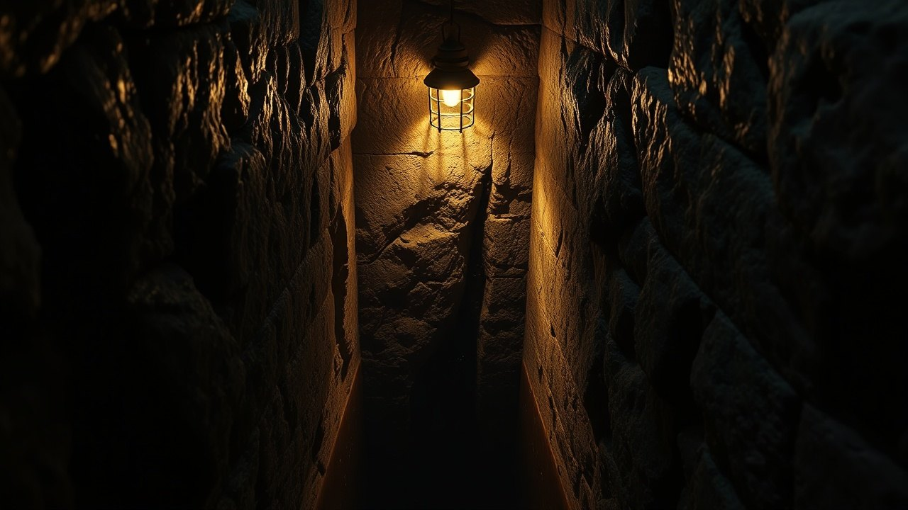

The Egyptian government drilled beneath the Sphinx in 1998. They stopped without explanation, and the coordinates never made it into a peer-reviewed journal.
Three separate survey teams from three different countries have logged anomalies under the Great Sphinx of Giza in the last thirty years. Every single dataset ended up either classified, confiscated, or quietly walked back by the Supreme Council of Antiquities. This is the paper trail.

Edgar Cayce Named the Coordinates in 1933
Edgar Cayce, working out of Virginia Beach, Virginia, gave reading 378-16 on October 29, 1933, describing a chamber of records buried between the Sphinx's paws and the Nile. The stenographic transcript is archived at the Association for Research and Enlightenment headquarters at 215 67th Street in Virginia Beach, catalog number 378-16.
Cayce placed the origin of that chamber at approximately 10,500 BC, roughly eight thousand years before the accepted Fourth Dynasty date for the Giza complex. He specified refugees from a submerged culture as the builders, and he specified the left forepaw as the entrance corridor.
The prediction sat on a shelf for sixty-five years until seismic equipment showed up on the Giza plateau and started returning readings that matched his coordinates within meters.
The 1998 Schor Expedition Seismic Data
Dr. Joseph Schor, funded through the Schor Foundation, ran a ground-penetrating radar and seismograph survey at Giza in 1996 through 1998 under permit from the Supreme Council of Antiquities. His technical partner was Thomas Dobecki, a geophysicist with McBride-Ratcliff and Associates out of Houston.
Dobecki's instruments logged a rectangular cavity roughly 9 meters by 12 meters beneath the Sphinx's left forepaw, at a depth of approximately 5 meters. The reading was consistent with a chamber, not a natural karst void. Dobecki had already published preliminary anomaly data with Robert Schoch in the journal of the Geological Society of America in 1992.
The permit was pulled in April 1998. Zahi Hawass, then Director of the Giza Plateau, told the press that Schor had exceeded the scope of his authorization. No follow-up survey was authorized. The raw seismic logs have never been published in a peer-reviewed venue.
The Water Shaft Exploration of 1999
In March 1999, Hawass personally led a Fox television special descending into the so-called Osiris Shaft east of the Sphinx causeway. The three-tiered shaft had been known since Selim Hassan mapped it in the 1930s. Hawass presented it as the answer to the cavity question.
The shaft bottoms out at roughly 30 meters and contains a sarcophagus in standing water. It sits east of the Sphinx, not under the left paw. The geology does not match the Schor anomaly coordinates.
The public spectacle was broadcast worldwide. The unexplored cavity under the left forepaw was not mentioned in the broadcast.
Three surveys. Three cavities. Zero excavations. The pattern is not scientific caution. The pattern is containment.
The 2009 Japanese Radar Confiscation
A team from Waseda University in Tokyo, led by Sakuji Yoshimura, had been running remote sensing at Giza since the 1980s. Yoshimura's group published preliminary GPR results in 1987 indicating a cavity on the north side of the Sphinx at a depth of approximately 2 meters, plus a longer anomaly tracing east to west.
Follow-up work in the late 2000s reportedly extended those traces to nine meters of depth along the north flank. The complete dataset was never issued as a full technical publication through Waseda's Institute of Egyptology. The equipment access was curtailed under the antiquities restrictions tightened after 2002.
Every foreign team since has operated under the same clause: no drilling, no coring, no invasive verification of any subsurface anomaly at the Sphinx without direct Supreme Council approval. That approval has not been granted.
Zahi Hawass and the Access Blockade
Zahi Hawass held the top antiquities post in Egypt in various titles from 2002 through 2011, culminating as Minister of State for Antiquities Affairs. During that decade he stated repeatedly, on record with National Geographic and in his own books, that no chamber exists under the Sphinx and that Cayce was a fraud.
He also stated, in a 2010 interview archived on his personal site zahihawass.com, that there are tunnels under the Sphinx that no one has entered and that he chose not to open them. Both statements were made by the same man in the same decade.
The current Ministry of Tourism and Antiquities, headquartered in the Zamalek district of Cairo, has renewed the foreign-team restriction as recently as the 2019 ScanPyramids follow-up denials. The ScanPyramids muon tomography project, which found the Great Pyramid's Big Void in 2017, was explicitly not extended to the Sphinx.
What the Three Datasets Agree On
Dobecki 1998, Yoshimura 1987 and 2009, and the earlier 1977 SRI International resistivity survey led by Lambert Dolphin all independently reported subsurface anomalies beneath the Sphinx enclosure. Dolphin's SRI report is archived at Stanford Research Institute in Menlo Park, California.
The three surveys used three different technologies. Seismic refraction, ground-penetrating radar, and electrical resistivity. They were run by three unaffiliated teams across three decades. They converge on cavities beneath the Sphinx that are not natural fissures.
No excavation has been authorized to verify or falsify any of them.
The Schor logs are sealed. The Waseda scans were curtailed. The Dolphin SRI report is public but forty-eight years old and has never been acted on. Every technical instrument that has ever been pointed at the ground beneath the Sphinx's left paw has returned a positive signal, and every subsequent request to drill has been denied.
Cayce named the spot in 1933. The instruments confirmed the spot in 1977, 1987, 1998, and 2009. The Supreme Council has spent the last twenty-five years explaining why no one is allowed to open it. Ask yourself what kind of empty room requires a four-decade access ban. Then tell me in the comments what you think is actually down there.
Before you go
7 books the Vatican doesn't want you reading. Free PDF — the texts they cut, with sources. Joined by 140+ Inner Circle members.
No spam. Unsubscribe anytime.
Go deeper
The Hidden Canon, Vol. I — Enoch. Jubilees. Thomas. Mary. Judas. 90 pages, 14 chapters, every receipt cited. The books your Bible quietly removed.
Read the Canon →Books that informed this investigation
As an Amazon Associate, Hidden Epoch earns from qualifying purchases. Cost to you: nothing.
Research safely
The VPN we use to research without being tracked. First 3 months free.
Get NordVPN →